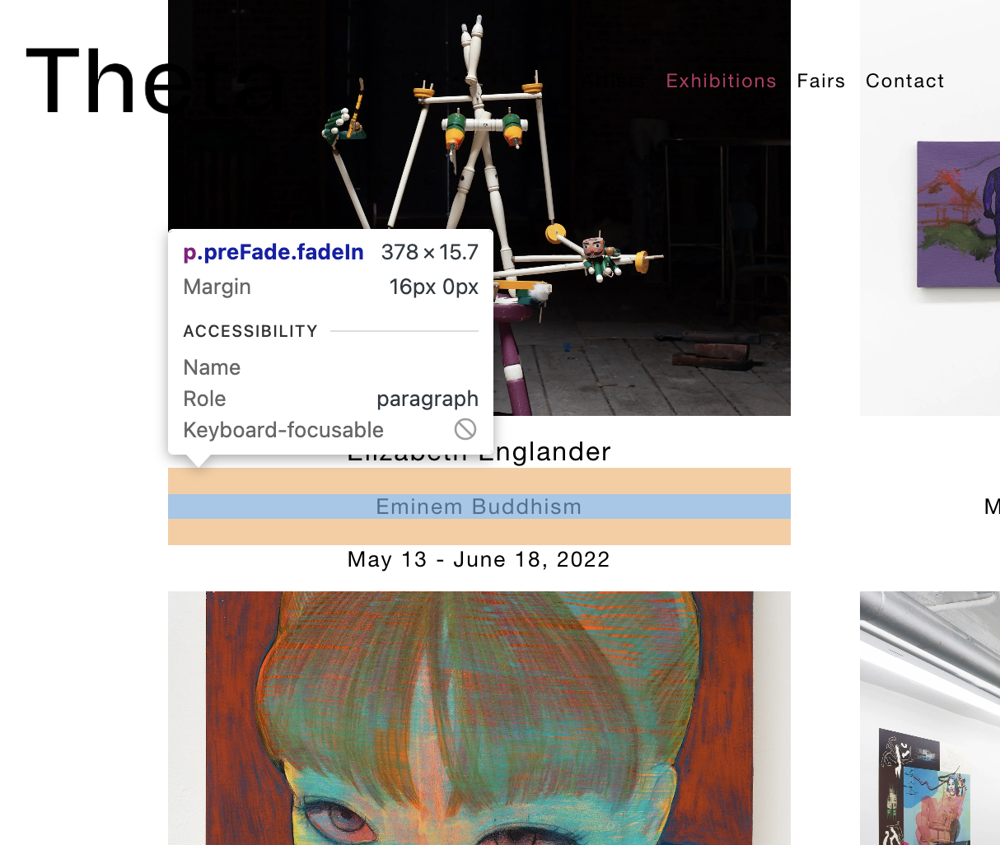

Generative Scrolling

The list of past exhibitions load on scroll and slowly fade in which looks to be done in HTML by targeting “transitions” and giving it an ease-in and ease-out function on scroll.
The list of past exhibitions load on scroll and slowly fade in which looks to be done in HTML by targeting “transitions” and giving it an ease-in and ease-out function on scroll.